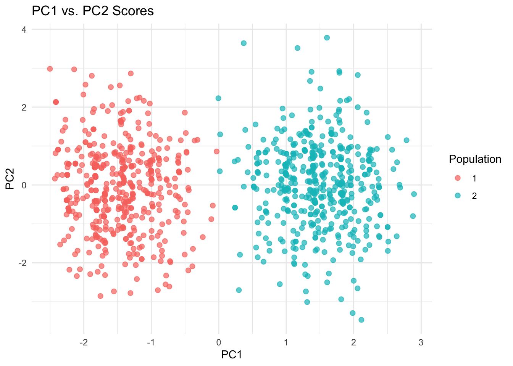
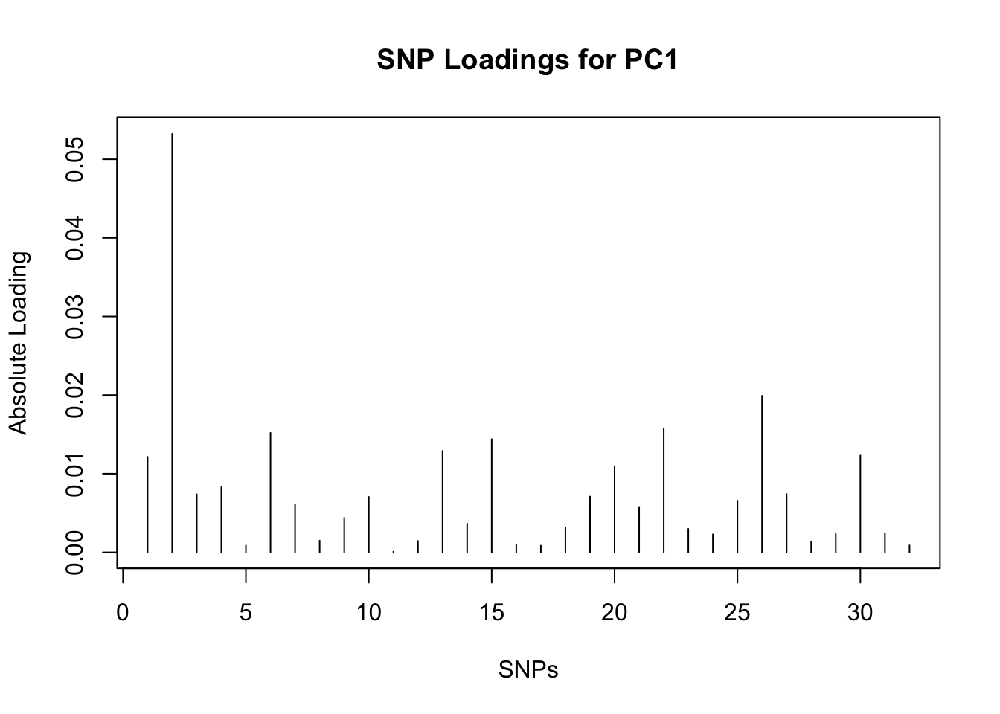
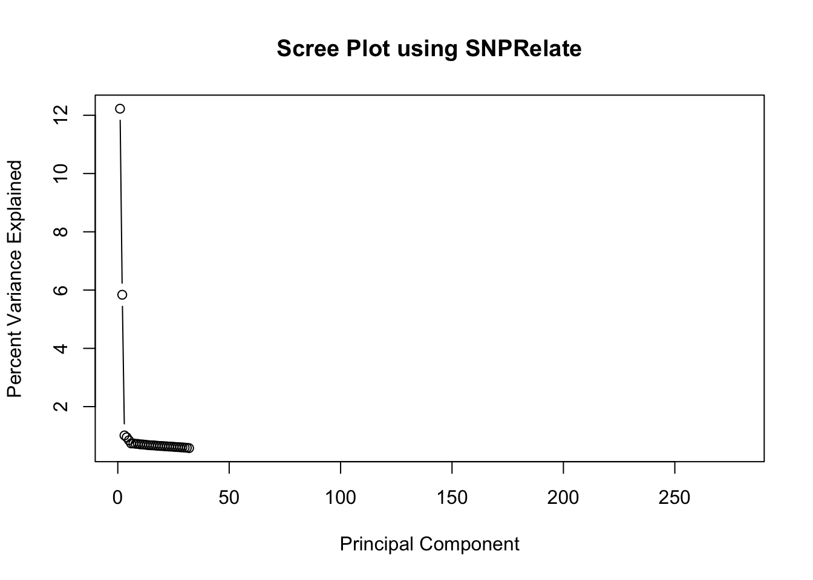
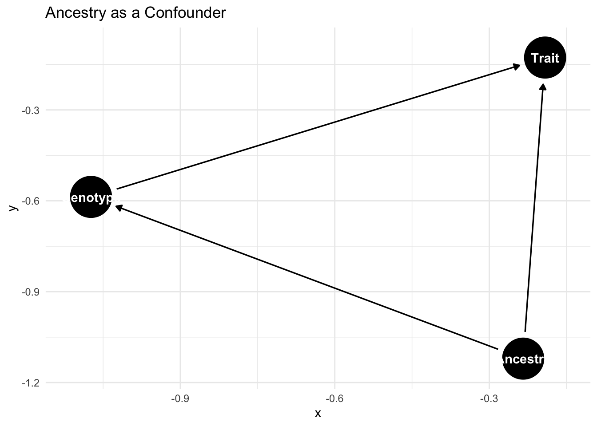

In this unit, we learned how genetic ancestry influences GWAS and PCA can be applied to adjust for population structure. Through journal clubs discussions, simulation studies, lab, and lectures, we examined the challenges caused by confounding, conducted PCA on genetic data, and evaluated the results using few diagnostic tools.
2 Key Concepts
Genetic Ancestry and Population Structure: Understanding how genetic variation is distributed across populations.
Confounding in GWAS: Recognizing ancestry as a potential confounder.
PCA for Population Structure Inference: Extracting principal components to capture genetic similarities/differences.
Adjusting for Population Structure: Using PCs as covariates in GWAS to control for confounding.
Evaluating Results: Assessing the number of PCs, interpreting loadings, and using scree plots.
Omitted Variable Bias: Understanding the mathematical proof
SNPRelate: Implementing PCA using an R package designed for genetic data analysis.
3 Genetic Ancestry and Population Structure
3.1 Local vs Global Ancestry
Local Ancestry refers to specific segments of DNA inherited from different ancestral populations.
Global Ancestry represents the proportion of DNA inherited from various populations across the entire genome.
For example: A genome that is 40% from Population 1 and 60% from Population 2 reflects global ancestry proportions of 0.40 and 0.60.
Challange: Determining the ancestral origin of genetic segments is difficult without robust comparison data.
4 Principle Component Analysis (PCA)
PCA is a dimension reduction techniques that indentifies linear combinations of SNPs to capture the most variance in the data. PCs often reflect population structure.
Rows: 1000 Columns: 17
── Column specification ────────────────────────────────────────────────────────
Delimiter: ","
dbl (17): population, trait, SNP1, SNP2, SNP3, SNP4, SNP5, SNP6, SNP7, SNP8,...
ℹ Use `spec()` to retrieve the full column specification for this data.
ℹ Specify the column types or set `show_col_types = FALSE` to quiet this message.
pca_scores_df <-as.data.frame(pca_scores) %>%mutate(population = pcadata$population)ggplot(pca_scores_df, aes(x = PC1, y = PC2, color =as.factor(population))) +geom_point(alpha =0.7, size =2) +labs(title ="PC1 vs. PC2 Scores", color ="Population") +theme_minimal()

This is the Score plot. This tells us…
5 Evaluating PCA Results Efficiently
5.1 SNPRelate Package
SNPRelate is a powerful R package designed for analyzing large-scale genomic datasets efficiently. It is widely used for performing Principal Component Analysis (PCA), kinship analysis, Linkage Disequilibrium (LD) pruning, and other genetic association studies. This package is particularly beneficial in genome-wide association studies (GWAS) where population structure can act as a confounder, leading to spurious associations.
Loading the library and exploring the tutorial
Code
library(SNPRelate)
Warning: package 'SNPRelate' was built under R version 4.3.2
Loading required package: gdsfmt
SNPRelate -- supported by Streaming SIMD Extensions 2 (SSE2)
Code
vignette("SNPRelate", package ="SNPRelate")
starting httpd help server ...
done
SNPRelate uses Genomic Data Structure (GDS) files for efficient data storage. For example, 279 individuals with sample IDs stored as sample.id, and 9088 SNPs with SNP information like position, chromosomes, and genotypes.
We can extract population information. (1) CEU: Utah resient of European ancestry. (2) HCB: Han Chinese in Beijing. (3) JPT: Japanese in Tokyo. (4) YRI: Yoruba from Nigeria.
Principal Component Analysis (PCA) on genotypes:
Excluding 2,636 SNPs (non-autosomes or non-selection)
Excluding 0 SNP (monomorphic: TRUE, MAF: NaN, missing rate: NaN)
# of samples: 279
# of SNPs: 6,452
using 2 threads
# of principal components: 32
PCA: the sum of all selected genotypes (0,1,2) = 1809577
CPU capabilities: Double-Precision SSE2
Mon Apr 7 11:02:33 2025 (internal increment: 5504)
[..................................................] 0%, ETC: ---
[==================================================] 100%, completed, 0s
Mon Apr 7 11:02:33 2025 Begin (eigenvalues and eigenvectors)
Mon Apr 7 11:02:33 2025 Done.
Code
snpgdsClose(genofile)
Eigenvalues and Eigenvectors are calculated to represent the principal components (PCs), and SNPRelate can compute up to 32 PCs using an very efficient algorithms.
You can see that populations tend to from distinct clusters, and the first 2 PCs capture most of the populations structure.
This plot is called the parallel coordinates plot and it compares the top 16 PCs for each individual across different populations. Similar patterns within populations indicate shared genetic structure.
SNP Loading:
# of samples: 279
# of SNPs: 6,452
using 1 thread
using the top 32 eigenvectors
SNP Loading: the sum of all selected genotypes (0,1,2) = 1809577
Mon Apr 7 11:02:33 2025 (internal increment: 44040)
[..................................................] 0%, ETC: ---
[==================================================] 100%, completed, 0s
Mon Apr 7 11:02:33 2025 Done.
Code
plot(abs(snp_load$snploading[,1]), type ="h",main ="SNP Loadings for PC1",xlab ="SNPs",ylab ="Absolute Loading")

Code
snpgdsClose(genofile)
A scree plot helps determine how many PCs are necessary to capture the majority of variance.
Code
genofile <-snpgdsOpen(snpgdsExampleFileName())# Perform PCA using SNPRelatepca <-snpgdsPCA(genofile, num.thread =2)
Principal Component Analysis (PCA) on genotypes:
Excluding 365 SNPs on non-autosomes
Excluding 1 SNP (monomorphic: TRUE, MAF: NaN, missing rate: NaN)
# of samples: 279
# of SNPs: 8,722
using 2 threads
# of principal components: 32
PCA: the sum of all selected genotypes (0,1,2) = 2446510
CPU capabilities: Double-Precision SSE2
Mon Apr 7 11:02:34 2025 (internal increment: 5504)
[..................................................] 0%, ETC: ---
[==================================================] 100%, completed, 0s
Mon Apr 7 11:02:34 2025 Begin (eigenvalues and eigenvectors)
Mon Apr 7 11:02:34 2025 Done.
Code
# Calculate variance explainedpc.percent <- pca$varprop *100# Plot the scree plotplot(pc.percent, type ="b",xlab ="Principal Component",ylab ="Percent Variance Explained",main ="Scree Plot using SNPRelate")

Code
# Close the GDS filesnpgdsClose(genofile)
PC1 captures the largest proportion of variance
The variance explained deceases with each subsequent PC.
5.3 Evaluating PCA Results
So coming back to evaluating PCA results, many useful plot function from the SNPRelate package does a great job evaluation of PCA.
Score Plot Interpretation: The distinct clustering in the score plot suggests that the top PCs capture population structure.
Parallel Coordinates Plot: Consistent patterns within populations validate the PCA in detecting structure.
Loadings Plot: Identifies SNPs contributing to genetic differences between populations.
Scree Plot: Guides selection of the number of PCs by identifying the point where the variance explained plateaus.
5.4 For choosing the number of PCs
PCs that capture minimal variance may not significantly contribute to the analysis, and including too many PCs may introduce noise, while too few may fail to capture important structure.
6 Confounding and Bias in GWAS
In a GWAS, confounding can occur when genetic ancestry affects both the genotype and the phenotype. For instance, consider a study investigating the association between a specific SNP and a disease. If the SNP has different allele frequencies across populations and the disease prevalence also varies by ancestry due to environmental or lifestyle factors, then ancestry becomes a confounder.
Code
library(tidyverse)library(ggdag)
Warning: package 'ggdag' was built under R version 4.3.3
Attaching package: 'ggdag'
The following object is masked from 'package:stats':
filter
Code
library(dagitty)dag_conf <-dagitty('dag { Ancestry -> Genotype Ancestry -> Trait Genotype -> Trait}')ggdag(dag_conf) +theme_minimal() +labs(title ="Ancestry as a Confounder")

Ancestry influences both the SNP and the Trait, and this leads to confounding.
This is a R Code for adjusting for Confounding using PCA:
Call:
lm(formula = trait ~ SNP1 + pc1, data = pcadata)
Residuals:
Min 1Q Median 3Q Max
-3.2487 -0.7768 -0.0268 0.7581 3.6914
Coefficients:
Estimate Std. Error t value Pr(>|t|)
(Intercept) 1.6271 0.1174 13.853 <2e-16 ***
SNP1 -0.3624 0.1115 -3.249 0.0012 **
pc1 0.7383 0.0712 10.369 <2e-16 ***
---
Signif. codes: 0 '***' 0.001 '**' 0.01 '*' 0.05 '.' 0.1 ' ' 1
Residual standard error: 1.163 on 997 degrees of freedom
Multiple R-squared: 0.3344, Adjusted R-squared: 0.3331
F-statistic: 250.5 on 2 and 997 DF, p-value: < 2.2e-16
This adjustment helps reduce the confounding effect by incorporating the first principal component as a covariate.
Collider Example:
A collider occurs when a variable is influenced by both the genotype and the trait. For example, suppose cholesterol levels are influenced by both smoking status (predictor) and body weight (outcome). If cholesterol levels are controlled for in the analysis, it could introduce a spurious association between smoking and body weight.
By adjusting for the collider, a false association between smoking and weight may be introduced. So, key takeaways are: (1) Adjust for confounders to reduce bias. (2) Avoid adjusting for colliders as it can introduce false associations.
7 Omitted Variable Bias
Omitted variable bias occurs when a relevant variable is excluded form a regression model and leading to biased and inconsistent estimates of the regression coefficients.
This is a linear model: \[Y=X\beta+Z\gamma +\epsilon\], Where
\(Y\) is the outcome variable
\(X\) is the independent variable
\(Z\) is an omitted confounder
\(\beta\) is the coefficient for \(X\)
\(\gamma\) is the coefficient for \(Z\)
\(\epsilon\) is the error term with \(E[\epsilon]=0\)
Now, we supppose we mistakenly fit the following model, excluding \(Z\): \[Y=X\hat{\beta} +u\], Where:
\(\hat{\beta}\) is the biased estimator of \(\beta\)
\(u=Z\gamma +\epsilon\) is the composite error term
We can write the OLS estimate for \(\hat{\beta}\) as: \[\hat{\beta}=(X^TX)^{-1}X^TY\]
If we substitute the true model into this equation: \[\hat{\beta}=(X^TX)^{-1}X^T(X\beta+Z\gamma +\epsilon)=\beta+(X^TX)^{-1}X^TZ\gamma +(X^TX)^{-1}X^TE[\epsilon]\]
since \(E[\epsilon]=0\),
\[E[\hat{\beta}]=\beta+(X^TX)^{-1}X^TZ\gamma\]
If X and Z are correlated, the bias will be non-zero
The magnitude and direction of the bias depend on both the strength of the correlation between X and Z and the effect of Z on Y
If X and Z are uncorrelated, the bias will be 0
8 Adjusting for Population Structure in GWAS
To adjust for population structure, we can include PCs as covariates in the GWAS model:
Call:
lm(formula = trait ~ SNP1 + pc1, data = pcadata)
Residuals:
Min 1Q Median 3Q Max
-3.2487 -0.7768 -0.0268 0.7581 3.6914
Coefficients:
Estimate Std. Error t value Pr(>|t|)
(Intercept) 1.6271 0.1174 13.853 <2e-16 ***
SNP1 -0.3624 0.1115 -3.249 0.0012 **
pc1 0.7383 0.0712 10.369 <2e-16 ***
---
Signif. codes: 0 '***' 0.001 '**' 0.01 '*' 0.05 '.' 0.1 ' ' 1
Residual standard error: 1.163 on 997 degrees of freedom
Multiple R-squared: 0.3344, Adjusted R-squared: 0.3331
F-statistic: 250.5 on 2 and 997 DF, p-value: < 2.2e-16
9 Journal Clubs
9.1 Journal Club 4: “What is Ancestry?”
This paper talks about the complex and often misunderstood concept of ancestry in the context of genetics. Mathieson and Scally argue that genetic ancestry is not fixed identity or a clean label but rather a statement about shared segments of inherited DNA. Importantly, they distinguish genealogical ancestry from genetic ancestry. Since DNA is reshuffled via recombination each generation, we inherit only fragments from many ancestors, and not necessarily from all of them.
Some Key Takeaways:
Ancestry is not categorical: any attempt to box people into rigid population labels is both scientifically misleading and ethically wrong.
Discussions of ancestry must balance scientific accuracy with social responsibility. Misinterpretations can lead to oversimplified or even harmful narratives about identity and race.
The paper raises concerns about combining genetic similarity with identity categories and emphasizing that the importance of transparent, careful communication when reporting genetic ancestry.
9.2 Journal Club 5: “Genes Mirror Geography Within Europe”
This study applies PCA to European genetic data and shows a stunning result: when plotted, the top PCs align geographically with a map of Europe. PC1 captures a northwest-to-southeast, and PC2 captures a northeast-to-southwest. That is the genetic varaition across Europe.
Some Key Takeaways:
PCA effectively picks up on population structure, even subtle differences due to historical migration.
Study shows that there is no sharp boundary between populations. Genetic variation exists along gradients.
This study suggested that phenotype differences correlated with geography could produce spurious associations in GWAS if population structure is not adjusted for.
9.3 Journal Club 6: “SVMs for Genetic Ancestry”
This paper talked about how machine learning and model-based methods are used to infer ancestry from genotype data. Tools like PCA, Random Forests, and SVMs, as well as Bayesian models.
SVMs and PCA can be useful for classification and visualization of ancestry, but genetic ancestry does not equal to race/ethnicity.
Inference can become ethically complicated when individuals who self-identify as mixed race are excluded.
Additionally, the paper notes that phenotypic traits can also correlate with geography, so failing to control for population structure could lead to confoudning in GWAS.